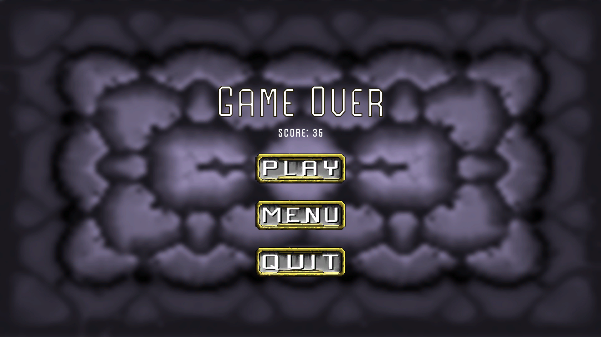
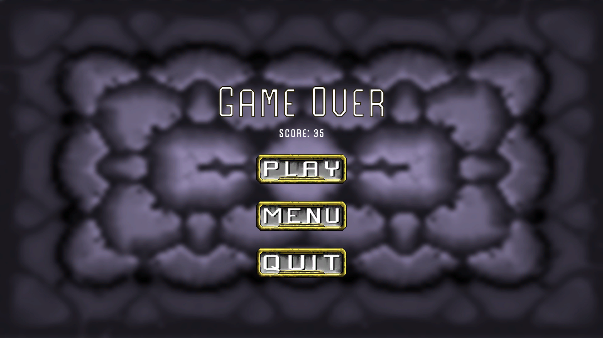

PROJECT INFO
Game Engine - Unity 2021.3.21f1
Project Type - Group of 5
Timeline - 7/3/23-30/3/23
GitHub Repository 
Code Sample- Track Scroller Class
DESCRIPTION
Mooney's Cave Crusader, a first-year university project, was a collaborative effort involving two designers, two artists, and myself as the sole programmer. Leveraging Unity Engine and programmed in C#, the game unfolded within a dynamic 2D environment. Unity's versatility allowed us to seamlessly integrate visual elements, while C# facilitated efficient and modular coding.
Just touching a little bit about the code sample, this was the Class for scrolling the tracks throughout the screen, this was needed as theoretically it could just go forever and the Engine has it's limitations so I decided to create a system where the tracks would actually be the ones moving and then once off screen they would go around again that way the whole scene itself never actually moves.
Throughout the development process, we embraced a structured approach to enhance our efficiency and cohesion. Weekly SCRUM meetings became a cornerstone of our methodology, providing a platform for in-depth discussions on game concepts, mechanics, and various project-related aspects. This consistent communication fostered a collaborative environment, ensuring that everyone was on the same page and contributing their unique expertise to the project.
In addition to SCRUM meetings, we utilized tools such as Trello boards and group chats to streamline our workflow. These platforms proved invaluable in organizing tasks, tracking progress, and facilitating real-time communication. The synergy between SCRUM meetings, Trello boards, and group chats played a pivotal role in not only meeting but surpassing our project milestones, allowing us to deliver a polished game prototype within the designated timeframe.
The satisfaction derived from the project extended beyond its timely completion. The final product was not only a testament to our collective dedication but also a source of pride. Witnessing the transformation of individual contributions into a cohesive and engaging game prototype reinforced the value of effective collaboration in achieving shared goals.
Mooney's Cave Crusader was, above all, an enjoyable and enriching venture that not only honed my technical skills as a programmer but also broadened my perspective on the importance of teamwork and reliability in achieving success within a group setting. This experience laid a solid foundation for future collaborative endeavors and left an indelible mark on my understanding of the intricacies involved in game development and project management.